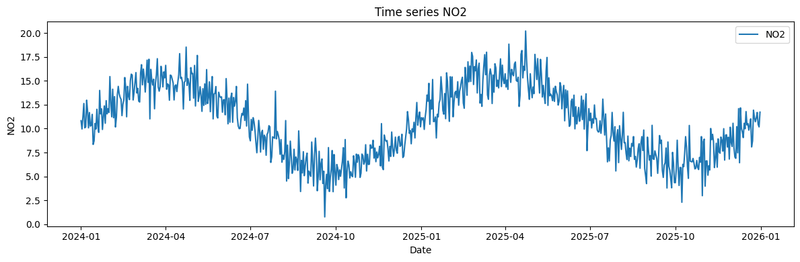
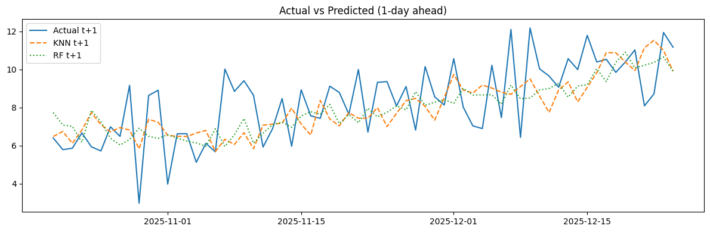
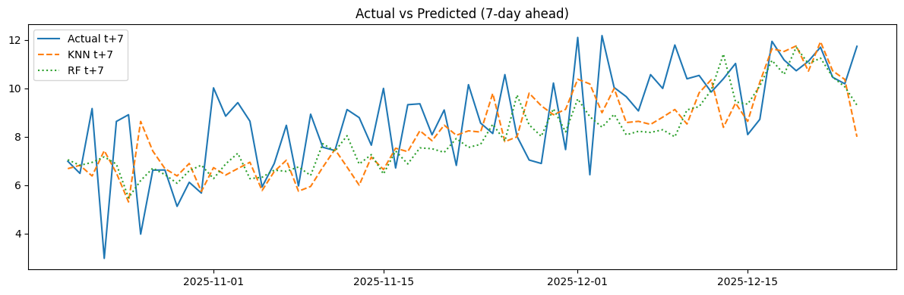

NO2 Multi-day Forecast Pipeline#
Notebook ini menjalankan pipeline:
Load CSV (atau generate synthetic jika tidak ada)
Eksplorasi & ACF
Feature engineering (lag 1..14)
Time-based split
Normalisasi MinMax
Train KNN & RandomForest (MultiOutput)
Evaluasi per-horizon (MAE, RMSE, MAPE)
Simpan
predictions.csv, model & scalerContoh Flask deploy
Default: max_lag=14, horizon=7, test_days=60
Import library#
# Cell 2: Import libraries
%matplotlib inline
import os
import warnings
warnings.filterwarnings("ignore")
import numpy as np
import pandas as pd
import matplotlib.pyplot as plt
from sklearn.preprocessing import MinMaxScaler
from sklearn.neighbors import KNeighborsRegressor
from sklearn.ensemble import RandomForestRegressor
from sklearn.multioutput import MultiOutputRegressor
from sklearn.metrics import mean_absolute_error, mean_squared_error
import joblib
from statsmodels.graphics.tsaplots import plot_acf
Load CSV (atau generate jika tidak ada) & tampilan awal#
# Cell 3: Load CSV atau generate synthetic
CSV_PATH = "no2_data.csv"
if os.path.exists(CSV_PATH):
df = pd.read_csv(CSV_PATH, parse_dates=["date"])
print(f"Loaded {CSV_PATH} with {len(df)} rows.")
else:
# Generate synthetic daily data (contoh)
rng = pd.date_range("2024-01-01", "2025-12-31", freq="D")
np.random.seed(42)
seasonal = 10 + 5 * np.sin(2 * np.pi * rng.dayofyear / 365.25)
trend = 0.002 * np.arange(len(rng))
noise = np.random.normal(scale=1.5, size=len(rng))
no2 = seasonal + trend + noise
df = pd.DataFrame({"date": rng, "NO2": no2})
df.to_csv(CSV_PATH, index=False)
print(f"No CSV found — created synthetic and saved to {CSV_PATH} ({len(df)} rows).")
df = df.sort_values("date").reset_index(drop=True)
df["date"] = pd.to_datetime(df["date"])
df = df.set_index("date")
df.head()
Loaded no2_data.csv with 731 rows.
| NO2 | |
|---|---|
| date | |
| 2024-01-01 | 10.831079 |
| 2024-01-02 | 9.966594 |
| 2024-01-03 | 11.233455 |
| 2024-01-04 | 12.634322 |
| 2024-01-05 | 10.086300 |
Visualisasi awal time series#
# Cell 4: Plot time series NO2
plt.figure(figsize=(12,4))
plt.plot(df.index, df["NO2"], label="NO2")
plt.title("Time series NO2")
plt.xlabel("Date")
plt.ylabel("NO2")
plt.legend()
plt.tight_layout()
plt.show()

Cek autocorrelation & plot ACF#
# Cell 5: Autocorrelation numeric + ACF plot
print("Autocorrelation (lag 1..14):")
for lag in range(1, 15):
print(f"lag {lag}: {df['NO2'].autocorr(lag=lag):.3f}")
plt.figure(figsize=(10,4))
plot_acf(df["NO2"], lags=30)
plt.title("ACF - NO2")
plt.tight_layout()
plt.show()
Autocorrelation (lag 1..14):
lag 1: 0.832
lag 2: 0.834
lag 3: 0.838
lag 4: 0.821
lag 5: 0.838
lag 6: 0.833
lag 7: 0.828
lag 8: 0.823
lag 9: 0.830
lag 10: 0.828
lag 11: 0.830
lag 12: 0.824
lag 13: 0.819
lag 14: 0.810
<Figure size 1000x400 with 0 Axes>
Feature engineering (lag 1..14) dan target multi-step#
# Cell 6: Feature engineering
MAX_LAG = 14
HORIZON = 7 # default 7 hari ke depan
data = df.copy()
for lag in range(1, MAX_LAG+1):
data[f"lag_{lag}"] = data["NO2"].shift(lag)
for h in range(1, HORIZON+1):
data[f"y_plus_{h}"] = data["NO2"].shift(-h)
data = data.dropna().copy()
print(f"Data after lag/target creation: {data.shape}")
data.head()
Data after lag/target creation: (710, 22)
| NO2 | lag_1 | lag_2 | lag_3 | lag_4 | lag_5 | lag_6 | lag_7 | lag_8 | lag_9 | ... | lag_12 | lag_13 | lag_14 | y_plus_1 | y_plus_2 | y_plus_3 | y_plus_4 | y_plus_5 | y_plus_6 | y_plus_7 | |
|---|---|---|---|---|---|---|---|---|---|---|---|---|---|---|---|---|---|---|---|---|---|
| date | |||||||||||||||||||||
| 2024-01-15 | 8.716535 | 8.348643 | 11.495804 | 10.348236 | 10.265371 | 11.687725 | 10.082809 | 11.851079 | 12.981450 | 10.173951 | ... | 11.233455 | 9.966594 | 10.831079 | 10.545452 | 9.954207 | 12.028967 | 10.279252 | 9.606050 | 14.005697 | 11.550754 |
| 2024-01-16 | 10.545452 | 8.716535 | 8.348643 | 11.495804 | 10.348236 | 10.265371 | 11.687725 | 10.082809 | 11.851079 | 12.981450 | ... | 12.634322 | 11.233455 | 9.966594 | 9.954207 | 12.028967 | 10.279252 | 9.606050 | 14.005697 | 11.550754 | 12.072359 |
| 2024-01-17 | 9.954207 | 10.545452 | 8.716535 | 8.348643 | 11.495804 | 10.348236 | 10.265371 | 11.687725 | 10.082809 | 11.851079 | ... | 10.086300 | 12.634322 | 11.233455 | 12.028967 | 10.279252 | 9.606050 | 14.005697 | 11.550754 | 12.072359 | 9.915023 |
| 2024-01-18 | 12.028967 | 9.954207 | 10.545452 | 8.716535 | 8.348643 | 11.495804 | 10.348236 | 10.265371 | 11.687725 | 10.082809 | ... | 10.173951 | 10.086300 | 12.634322 | 10.279252 | 9.606050 | 14.005697 | 11.550754 | 12.072359 | 9.915023 | 11.316055 |
| 2024-01-19 | 10.279252 | 12.028967 | 9.954207 | 10.545452 | 8.716535 | 8.348643 | 11.495804 | 10.348236 | 10.265371 | 11.687725 | ... | 12.981450 | 10.173951 | 10.086300 | 9.606050 | 14.005697 | 11.550754 | 12.072359 | 9.915023 | 11.316055 | 12.378881 |
5 rows × 22 columns
Split train-test (time-based)#
# Cell 7: Time-based split
TEST_DAYS = 60
# Pastikan ada cukup data
train_end = data.index[-(TEST_DAYS + HORIZON)]
train = data.loc[:train_end].copy()
test = data.loc[train_end + pd.Timedelta(days=1):].copy()
print(f"Train rows: {len(train)}, Test rows: {len(test)}")
feature_cols = [f"lag_{i}" for i in range(1, MAX_LAG+1)]
target_cols = [f"y_plus_{h}" for h in range(1, HORIZON+1)]
X_train = train[feature_cols].values
y_train = train[target_cols].values
X_test = test[feature_cols].values
y_test = test[target_cols].values
Train rows: 644, Test rows: 66
Normalisasi MinMax (fit di train)#
# Cell 8: Normalisasi MinMax
scaler_X = MinMaxScaler()
scaler_y = MinMaxScaler()
X_train_s = scaler_X.fit_transform(X_train)
X_test_s = scaler_X.transform(X_test)
y_train_s = scaler_y.fit_transform(y_train)
# Simpan scaler (opsional)
joblib.dump(scaler_X, "scaler_X.joblib")
joblib.dump(scaler_y, "scaler_y.joblib")
print("Scalers saved: scaler_X.joblib, scaler_y.joblib")
Scalers saved: scaler_X.joblib, scaler_y.joblib
Train Model: KNN (MultiOutput)#
# Cell 9: Train KNN (MultiOutput)
knn = MultiOutputRegressor(KNeighborsRegressor(n_neighbors=5))
knn.fit(X_train_s, y_train_s)
joblib.dump(knn, "model_knn_multioutput.joblib")
print("KNN trained & saved: model_knn_multioutput.joblib")
KNN trained & saved: model_knn_multioutput.joblib
Train Model: Random Forest (MultiOutput)#
# Cell 10: Train RandomForest (MultiOutput)
rf = MultiOutputRegressor(RandomForestRegressor(n_estimators=200, random_state=42, n_jobs=-1))
rf.fit(X_train_s, y_train_s)
joblib.dump(rf, "model_rf_multioutput.joblib")
print("Random Forest trained & saved: model_rf_multioutput.joblib")
Random Forest trained & saved: model_rf_multioutput.joblib
Evaluasi: MAE, RMSE, MAPE per horizon#
# Cell 11: Evaluasi
def mape(y_true, y_pred):
y_true = np.array(y_true)
y_pred = np.array(y_pred)
mask = y_true != 0
if not mask.any():
return np.nan
return np.mean(np.abs((y_true[mask] - y_pred[mask]) / y_true[mask])) * 100
# Prediksi (skala)
y_pred_knn_s = knn.predict(X_test_s)
y_pred_rf_s = rf.predict(X_test_s)
# Invers transform
y_pred_knn = scaler_y.inverse_transform(y_pred_knn_s)
y_pred_rf = scaler_y.inverse_transform(y_pred_rf_s)
# Hitung metrik per horizon
metrics = []
for model_name, y_pred in [("KNN", y_pred_knn), ("RF", y_pred_rf)]:
for h in range(HORIZON):
mae = mean_absolute_error(y_test[:,h], y_pred[:,h])
rmse = mean_squared_error(y_test[:,h], y_pred[:,h]) ** 0.5
mpe = mape(y_test[:,h], y_pred[:,h])
metrics.append({"model": model_name, "horizon_day": h+1, "MAE": mae, "RMSE": rmse, "MAPE": mpe})
Plot hasil aktual vs prediksi (1-day dan HORIZON-day)#
# Cell 12: Visualisasi hasil
test_dates = test.index[:len(y_pred_knn)]
# 1-day ahead
plt.figure(figsize=(12,4))
plt.plot(test_dates, y_test[:,0], label="Actual t+1")
plt.plot(test_dates, y_pred_knn[:,0], '--', label="KNN t+1")
plt.plot(test_dates, y_pred_rf[:,0], ':', label="RF t+1")
plt.title("Actual vs Predicted (1-day ahead)")
plt.legend()
plt.tight_layout()
plt.show()
# horizon (misal 7-day)
plt.figure(figsize=(12,4))
plt.plot(test_dates, y_test[:,HORIZON-1], label=f"Actual t+{HORIZON}")
plt.plot(test_dates, y_pred_knn[:,HORIZON-1], '--', label=f"KNN t+{HORIZON}")
plt.plot(test_dates, y_pred_rf[:,HORIZON-1], ':', label=f"RF t+{HORIZON}")
plt.title(f"Actual vs Predicted ({HORIZON}-day ahead)")
plt.legend()
plt.tight_layout()
plt.show()


Simpan hasil prediksi ke CSV#
# Cell 13: Simpan predictions.csv
results = pd.DataFrame({"date": test_dates})
for h in range(HORIZON):
results[f"actual_t_plus_{h+1}"] = y_test[:,h]
results[f"pred_knn_t_plus_{h+1}"] = y_pred_knn[:,h]
results[f"pred_rf_t_plus_{h+1}"] = y_pred_rf[:,h]
results.to_csv("predictions.csv", index=False)
print("Saved predictions.csv. Sample:")
results.head(10)
Saved predictions.csv. Sample:
| date | actual_t_plus_1 | pred_knn_t_plus_1 | pred_rf_t_plus_1 | actual_t_plus_2 | pred_knn_t_plus_2 | pred_rf_t_plus_2 | actual_t_plus_3 | pred_knn_t_plus_3 | pred_rf_t_plus_3 | ... | pred_rf_t_plus_4 | actual_t_plus_5 | pred_knn_t_plus_5 | pred_rf_t_plus_5 | actual_t_plus_6 | pred_knn_t_plus_6 | pred_rf_t_plus_6 | actual_t_plus_7 | pred_knn_t_plus_7 | pred_rf_t_plus_7 | |
|---|---|---|---|---|---|---|---|---|---|---|---|---|---|---|---|---|---|---|---|---|---|
| 0 | 2025-10-20 | 6.396291 | 6.474261 | 7.733710 | 5.784133 | 6.802212 | 7.147638 | 5.857514 | 6.688947 | 6.920936 | ... | 6.579315 | 5.933133 | 7.355894 | 8.302534 | 5.716273 | 6.607923 | 6.255459 | 6.983802 | 6.678113 | 7.046305 |
| 1 | 2025-10-21 | 5.784133 | 6.742348 | 7.074534 | 5.857514 | 6.574493 | 7.111074 | 6.663225 | 7.420634 | 6.753067 | ... | 8.259386 | 5.716273 | 6.744928 | 6.410352 | 6.983802 | 6.671792 | 6.890645 | 6.481639 | 6.816278 | 6.815325 |
| 2 | 2025-10-22 | 5.857514 | 6.115831 | 7.011442 | 6.663225 | 6.890151 | 6.737055 | 5.933133 | 6.837965 | 8.117030 | ... | 6.148359 | 6.983802 | 5.936105 | 6.842746 | 6.481639 | 6.452776 | 6.582103 | 9.161365 | 6.374217 | 6.937582 |
| 3 | 2025-10-23 | 6.663225 | 6.812693 | 6.168532 | 5.933133 | 7.595143 | 7.778013 | 5.716273 | 8.022074 | 7.169445 | ... | 6.583188 | 6.481639 | 6.932922 | 6.429756 | 9.161365 | 6.513382 | 6.804837 | 2.971502 | 7.421183 | 7.164794 |
| 4 | 2025-10-24 | 5.933133 | 7.727476 | 7.852536 | 5.716273 | 7.118457 | 7.077052 | 6.983802 | 6.796971 | 6.498052 | ... | 6.275819 | 9.161365 | 6.348141 | 6.610087 | 2.971502 | 7.267220 | 7.052745 | 8.629096 | 6.500532 | 6.864080 |
| 5 | 2025-10-25 | 5.716273 | 7.099057 | 7.239635 | 6.983802 | 5.911618 | 6.653833 | 6.481639 | 6.442293 | 6.002155 | ... | 6.486959 | 2.971502 | 7.774864 | 6.904230 | 8.629096 | 6.825877 | 6.683192 | 8.906129 | 5.300960 | 5.474454 |
| 6 | 2025-10-26 | 6.983802 | 6.720796 | 6.383605 | 6.481639 | 6.989400 | 6.057574 | 9.161365 | 6.173299 | 6.480718 | ... | 6.999324 | 8.629096 | 7.669297 | 6.932969 | 8.906129 | 5.824507 | 5.519603 | 3.973355 | 8.629161 | 6.186013 |
| 7 | 2025-10-27 | 6.481639 | 6.943025 | 6.027940 | 9.161365 | 6.036164 | 6.345643 | 2.971502 | 7.550061 | 6.749608 | ... | 6.943446 | 8.906129 | 6.195484 | 5.732081 | 3.973355 | 8.121255 | 6.129236 | 6.617108 | 7.404484 | 6.699022 |
| 8 | 2025-10-28 | 9.161365 | 6.815086 | 6.313461 | 2.971502 | 6.164533 | 6.976218 | 8.629096 | 6.485903 | 6.545047 | ... | 5.736733 | 3.973355 | 6.211513 | 6.510918 | 6.617108 | 8.126037 | 6.957129 | 6.622924 | 6.679180 | 6.430775 |
| 9 | 2025-10-29 | 2.971502 | 5.826638 | 6.907644 | 8.629096 | 6.839251 | 6.565778 | 8.906129 | 6.435828 | 5.768505 | ... | 6.537149 | 6.617108 | 8.415258 | 6.804923 | 6.622924 | 6.432332 | 6.355402 | 5.118996 | 6.377857 | 6.074558 |
10 rows × 22 columns
Contoh Flask deploy file (dibuat otomatis)#
import streamlit as st
import numpy as np
import joblib
import pandas as pd
import matplotlib.pyplot as plt
# ======================
# LOAD MODEL & SCALER
# ======================
model = joblib.load("model_rf_multioutput.joblib")
scaler_X = joblib.load("scaler_X.joblib")
scaler_y = joblib.load("scaler_y.joblib")
st.title("🌫️ Prediksi NO₂ - 7 Hari ke Depan")
st.write("Masukkan 14 nilai lag (lag_1 sampai lag_14) untuk memprediksi kadar NO₂ selama 7 hari ke depan.")
# ======================
# INPUT FORM
# ======================
lags = []
cols = st.columns(7)
for i in range(14):
with cols[i % 7]:
val = st.number_input(f"Lag {i+1}", value=0.0, step=0.1, format="%.3f")
lags.append(val)
if st.button("🔍 Prediksi"):
if len(lags) == 14:
X_input = np.array(lags).reshape(1, -1)
X_scaled = scaler_X.transform(X_input)
pred_scaled = model.predict(X_scaled)
pred = scaler_y.inverse_transform(pred_scaled)[0]
future_days = [f"Hari {i+1}" for i in range(7)]
df_result = pd.DataFrame({"Hari": future_days, "Prediksi NO2": pred})
st.success("✅ Prediksi berhasil!")
st.dataframe(df_result)
# ======================
# VISUALISASI GRAFIK
# ======================
plt.figure(figsize=(8,4))
plt.plot(future_days, pred, marker="o")
plt.xlabel("Hari ke-")
plt.ylabel("Kadar NO₂ (µg/m³)")
plt.title("Prediksi NO₂ untuk 7 Hari ke Depan")
st.pyplot(plt)
else:
st.error("❌ Input tidak lengkap. Harus ada 14 nilai lag!")
st.caption("Model: Random Forest MultiOutput | Scaler: MinMaxScaler")
2025-11-02 23:13:03.324 WARNING streamlit.runtime.scriptrunner_utils.script_run_context: Thread 'MainThread': missing ScriptRunContext! This warning can be ignored when running in bare mode.
2025-11-02 23:13:04.137
Warning: to view this Streamlit app on a browser, run it with the following
command:
streamlit run C:\Users\ThinkPad\AppData\Roaming\Python\Python310\site-packages\ipykernel_launcher.py [ARGUMENTS]
2025-11-02 23:13:04.138 Thread 'MainThread': missing ScriptRunContext! This warning can be ignored when running in bare mode.
2025-11-02 23:13:04.140 Thread 'MainThread': missing ScriptRunContext! This warning can be ignored when running in bare mode.
2025-11-02 23:13:04.140 Thread 'MainThread': missing ScriptRunContext! This warning can be ignored when running in bare mode.
2025-11-02 23:13:04.141 Thread 'MainThread': missing ScriptRunContext! This warning can be ignored when running in bare mode.
2025-11-02 23:13:04.142 Thread 'MainThread': missing ScriptRunContext! This warning can be ignored when running in bare mode.
2025-11-02 23:13:04.143 Thread 'MainThread': missing ScriptRunContext! This warning can be ignored when running in bare mode.
2025-11-02 23:13:04.143 Thread 'MainThread': missing ScriptRunContext! This warning can be ignored when running in bare mode.
2025-11-02 23:13:04.145 Thread 'MainThread': missing ScriptRunContext! This warning can be ignored when running in bare mode.
2025-11-02 23:13:04.146 Thread 'MainThread': missing ScriptRunContext! This warning can be ignored when running in bare mode.
2025-11-02 23:13:04.146 Thread 'MainThread': missing ScriptRunContext! This warning can be ignored when running in bare mode.
2025-11-02 23:13:04.147 Thread 'MainThread': missing ScriptRunContext! This warning can be ignored when running in bare mode.
2025-11-02 23:13:04.148 Thread 'MainThread': missing ScriptRunContext! This warning can be ignored when running in bare mode.
2025-11-02 23:13:04.148 Thread 'MainThread': missing ScriptRunContext! This warning can be ignored when running in bare mode.
2025-11-02 23:13:04.149 Thread 'MainThread': missing ScriptRunContext! This warning can be ignored when running in bare mode.
2025-11-02 23:13:04.150 Thread 'MainThread': missing ScriptRunContext! This warning can be ignored when running in bare mode.
2025-11-02 23:13:04.151 Thread 'MainThread': missing ScriptRunContext! This warning can be ignored when running in bare mode.
2025-11-02 23:13:04.151 Thread 'MainThread': missing ScriptRunContext! This warning can be ignored when running in bare mode.
2025-11-02 23:13:04.152 Session state does not function when running a script without `streamlit run`
2025-11-02 23:13:04.152 Thread 'MainThread': missing ScriptRunContext! This warning can be ignored when running in bare mode.
2025-11-02 23:13:04.152 Thread 'MainThread': missing ScriptRunContext! This warning can be ignored when running in bare mode.
2025-11-02 23:13:04.154 Thread 'MainThread': missing ScriptRunContext! This warning can be ignored when running in bare mode.
2025-11-02 23:13:04.155 Thread 'MainThread': missing ScriptRunContext! This warning can be ignored when running in bare mode.
2025-11-02 23:13:04.155 Thread 'MainThread': missing ScriptRunContext! This warning can be ignored when running in bare mode.
2025-11-02 23:13:04.156 Thread 'MainThread': missing ScriptRunContext! This warning can be ignored when running in bare mode.
2025-11-02 23:13:04.156 Thread 'MainThread': missing ScriptRunContext! This warning can be ignored when running in bare mode.
2025-11-02 23:13:04.158 Thread 'MainThread': missing ScriptRunContext! This warning can be ignored when running in bare mode.
2025-11-02 23:13:04.158 Thread 'MainThread': missing ScriptRunContext! This warning can be ignored when running in bare mode.
2025-11-02 23:13:04.159 Thread 'MainThread': missing ScriptRunContext! This warning can be ignored when running in bare mode.
2025-11-02 23:13:04.160 Thread 'MainThread': missing ScriptRunContext! This warning can be ignored when running in bare mode.
2025-11-02 23:13:04.160 Thread 'MainThread': missing ScriptRunContext! This warning can be ignored when running in bare mode.
2025-11-02 23:13:04.162 Thread 'MainThread': missing ScriptRunContext! This warning can be ignored when running in bare mode.
2025-11-02 23:13:04.162 Thread 'MainThread': missing ScriptRunContext! This warning can be ignored when running in bare mode.
2025-11-02 23:13:04.163 Thread 'MainThread': missing ScriptRunContext! This warning can be ignored when running in bare mode.
2025-11-02 23:13:04.163 Thread 'MainThread': missing ScriptRunContext! This warning can be ignored when running in bare mode.
2025-11-02 23:13:04.165 Thread 'MainThread': missing ScriptRunContext! This warning can be ignored when running in bare mode.
2025-11-02 23:13:04.165 Thread 'MainThread': missing ScriptRunContext! This warning can be ignored when running in bare mode.
2025-11-02 23:13:04.166 Thread 'MainThread': missing ScriptRunContext! This warning can be ignored when running in bare mode.
2025-11-02 23:13:04.166 Thread 'MainThread': missing ScriptRunContext! This warning can be ignored when running in bare mode.
2025-11-02 23:13:04.168 Thread 'MainThread': missing ScriptRunContext! This warning can be ignored when running in bare mode.
2025-11-02 23:13:04.168 Thread 'MainThread': missing ScriptRunContext! This warning can be ignored when running in bare mode.
2025-11-02 23:13:04.169 Thread 'MainThread': missing ScriptRunContext! This warning can be ignored when running in bare mode.
2025-11-02 23:13:04.169 Thread 'MainThread': missing ScriptRunContext! This warning can be ignored when running in bare mode.
2025-11-02 23:13:04.171 Thread 'MainThread': missing ScriptRunContext! This warning can be ignored when running in bare mode.
2025-11-02 23:13:04.171 Thread 'MainThread': missing ScriptRunContext! This warning can be ignored when running in bare mode.
2025-11-02 23:13:04.172 Thread 'MainThread': missing ScriptRunContext! This warning can be ignored when running in bare mode.
2025-11-02 23:13:04.172 Thread 'MainThread': missing ScriptRunContext! This warning can be ignored when running in bare mode.
2025-11-02 23:13:04.174 Thread 'MainThread': missing ScriptRunContext! This warning can be ignored when running in bare mode.
2025-11-02 23:13:04.174 Thread 'MainThread': missing ScriptRunContext! This warning can be ignored when running in bare mode.
2025-11-02 23:13:04.175 Thread 'MainThread': missing ScriptRunContext! This warning can be ignored when running in bare mode.
2025-11-02 23:13:04.175 Thread 'MainThread': missing ScriptRunContext! This warning can be ignored when running in bare mode.
2025-11-02 23:13:04.177 Thread 'MainThread': missing ScriptRunContext! This warning can be ignored when running in bare mode.
2025-11-02 23:13:04.177 Thread 'MainThread': missing ScriptRunContext! This warning can be ignored when running in bare mode.
2025-11-02 23:13:04.178 Thread 'MainThread': missing ScriptRunContext! This warning can be ignored when running in bare mode.
2025-11-02 23:13:04.179 Thread 'MainThread': missing ScriptRunContext! This warning can be ignored when running in bare mode.
2025-11-02 23:13:04.179 Thread 'MainThread': missing ScriptRunContext! This warning can be ignored when running in bare mode.
2025-11-02 23:13:04.180 Thread 'MainThread': missing ScriptRunContext! This warning can be ignored when running in bare mode.
2025-11-02 23:13:04.181 Thread 'MainThread': missing ScriptRunContext! This warning can be ignored when running in bare mode.
2025-11-02 23:13:04.182 Thread 'MainThread': missing ScriptRunContext! This warning can be ignored when running in bare mode.
2025-11-02 23:13:04.182 Thread 'MainThread': missing ScriptRunContext! This warning can be ignored when running in bare mode.
2025-11-02 23:13:04.183 Thread 'MainThread': missing ScriptRunContext! This warning can be ignored when running in bare mode.
2025-11-02 23:13:04.183 Thread 'MainThread': missing ScriptRunContext! This warning can be ignored when running in bare mode.
2025-11-02 23:13:04.184 Thread 'MainThread': missing ScriptRunContext! This warning can be ignored when running in bare mode.
2025-11-02 23:13:04.184 Thread 'MainThread': missing ScriptRunContext! This warning can be ignored when running in bare mode.
2025-11-02 23:13:04.186 Thread 'MainThread': missing ScriptRunContext! This warning can be ignored when running in bare mode.
2025-11-02 23:13:04.187 Thread 'MainThread': missing ScriptRunContext! This warning can be ignored when running in bare mode.
2025-11-02 23:13:04.187 Thread 'MainThread': missing ScriptRunContext! This warning can be ignored when running in bare mode.
2025-11-02 23:13:04.188 Thread 'MainThread': missing ScriptRunContext! This warning can be ignored when running in bare mode.
2025-11-02 23:13:04.189 Thread 'MainThread': missing ScriptRunContext! This warning can be ignored when running in bare mode.
2025-11-02 23:13:04.189 Thread 'MainThread': missing ScriptRunContext! This warning can be ignored when running in bare mode.
2025-11-02 23:13:04.190 Thread 'MainThread': missing ScriptRunContext! This warning can be ignored when running in bare mode.
2025-11-02 23:13:04.191 Thread 'MainThread': missing ScriptRunContext! This warning can be ignored when running in bare mode.
2025-11-02 23:13:04.191 Thread 'MainThread': missing ScriptRunContext! This warning can be ignored when running in bare mode.
2025-11-02 23:13:04.192 Thread 'MainThread': missing ScriptRunContext! This warning can be ignored when running in bare mode.
2025-11-02 23:13:04.192 Thread 'MainThread': missing ScriptRunContext! This warning can be ignored when running in bare mode.
2025-11-02 23:13:04.194 Thread 'MainThread': missing ScriptRunContext! This warning can be ignored when running in bare mode.
2025-11-02 23:13:04.194 Thread 'MainThread': missing ScriptRunContext! This warning can be ignored when running in bare mode.
2025-11-02 23:13:04.195 Thread 'MainThread': missing ScriptRunContext! This warning can be ignored when running in bare mode.
2025-11-02 23:13:04.196 Thread 'MainThread': missing ScriptRunContext! This warning can be ignored when running in bare mode.
2025-11-02 23:13:04.196 Thread 'MainThread': missing ScriptRunContext! This warning can be ignored when running in bare mode.
2025-11-02 23:13:04.196 Thread 'MainThread': missing ScriptRunContext! This warning can be ignored when running in bare mode.
2025-11-02 23:13:04.198 Thread 'MainThread': missing ScriptRunContext! This warning can be ignored when running in bare mode.
2025-11-02 23:13:04.198 Thread 'MainThread': missing ScriptRunContext! This warning can be ignored when running in bare mode.
2025-11-02 23:13:04.199 Thread 'MainThread': missing ScriptRunContext! This warning can be ignored when running in bare mode.
2025-11-02 23:13:04.200 Thread 'MainThread': missing ScriptRunContext! This warning can be ignored when running in bare mode.
2025-11-02 23:13:04.201 Thread 'MainThread': missing ScriptRunContext! This warning can be ignored when running in bare mode.
2025-11-02 23:13:04.202 Thread 'MainThread': missing ScriptRunContext! This warning can be ignored when running in bare mode.
2025-11-02 23:13:04.202 Thread 'MainThread': missing ScriptRunContext! This warning can be ignored when running in bare mode.
2025-11-02 23:13:04.204 Thread 'MainThread': missing ScriptRunContext! This warning can be ignored when running in bare mode.
2025-11-02 23:13:04.204 Thread 'MainThread': missing ScriptRunContext! This warning can be ignored when running in bare mode.
2025-11-02 23:13:04.205 Thread 'MainThread': missing ScriptRunContext! This warning can be ignored when running in bare mode.
2025-11-02 23:13:04.206 Thread 'MainThread': missing ScriptRunContext! This warning can be ignored when running in bare mode.
2025-11-02 23:13:04.207 Thread 'MainThread': missing ScriptRunContext! This warning can be ignored when running in bare mode.
2025-11-02 23:13:04.207 Thread 'MainThread': missing ScriptRunContext! This warning can be ignored when running in bare mode.
2025-11-02 23:13:04.208 Thread 'MainThread': missing ScriptRunContext! This warning can be ignored when running in bare mode.
2025-11-02 23:13:04.209 Thread 'MainThread': missing ScriptRunContext! This warning can be ignored when running in bare mode.
2025-11-02 23:13:04.209 Thread 'MainThread': missing ScriptRunContext! This warning can be ignored when running in bare mode.
2025-11-02 23:13:04.211 Thread 'MainThread': missing ScriptRunContext! This warning can be ignored when running in bare mode.
2025-11-02 23:13:04.212 Thread 'MainThread': missing ScriptRunContext! This warning can be ignored when running in bare mode.
2025-11-02 23:13:04.212 Thread 'MainThread': missing ScriptRunContext! This warning can be ignored when running in bare mode.
2025-11-02 23:13:04.213 Thread 'MainThread': missing ScriptRunContext! This warning can be ignored when running in bare mode.
2025-11-02 23:13:04.213 Thread 'MainThread': missing ScriptRunContext! This warning can be ignored when running in bare mode.
2025-11-02 23:13:04.214 Thread 'MainThread': missing ScriptRunContext! This warning can be ignored when running in bare mode.
2025-11-02 23:13:04.214 Thread 'MainThread': missing ScriptRunContext! This warning can be ignored when running in bare mode.
2025-11-02 23:13:04.215 Thread 'MainThread': missing ScriptRunContext! This warning can be ignored when running in bare mode.
2025-11-02 23:13:04.217 Thread 'MainThread': missing ScriptRunContext! This warning can be ignored when running in bare mode.
2025-11-02 23:13:04.218 Thread 'MainThread': missing ScriptRunContext! This warning can be ignored when running in bare mode.
2025-11-02 23:13:04.218 Thread 'MainThread': missing ScriptRunContext! This warning can be ignored when running in bare mode.
2025-11-02 23:13:04.219 Thread 'MainThread': missing ScriptRunContext! This warning can be ignored when running in bare mode.
2025-11-02 23:13:04.221 Thread 'MainThread': missing ScriptRunContext! This warning can be ignored when running in bare mode.
2025-11-02 23:13:04.221 Thread 'MainThread': missing ScriptRunContext! This warning can be ignored when running in bare mode.
2025-11-02 23:13:04.222 Thread 'MainThread': missing ScriptRunContext! This warning can be ignored when running in bare mode.
2025-11-02 23:13:04.223 Thread 'MainThread': missing ScriptRunContext! This warning can be ignored when running in bare mode.
2025-11-02 23:13:04.224 Thread 'MainThread': missing ScriptRunContext! This warning can be ignored when running in bare mode.
2025-11-02 23:13:04.225 Thread 'MainThread': missing ScriptRunContext! This warning can be ignored when running in bare mode.
2025-11-02 23:13:04.226 Thread 'MainThread': missing ScriptRunContext! This warning can be ignored when running in bare mode.
2025-11-02 23:13:04.226 Thread 'MainThread': missing ScriptRunContext! This warning can be ignored when running in bare mode.
2025-11-02 23:13:04.228 Thread 'MainThread': missing ScriptRunContext! This warning can be ignored when running in bare mode.
2025-11-02 23:13:04.228 Thread 'MainThread': missing ScriptRunContext! This warning can be ignored when running in bare mode.
2025-11-02 23:13:04.230 Thread 'MainThread': missing ScriptRunContext! This warning can be ignored when running in bare mode.
2025-11-02 23:13:04.230 Thread 'MainThread': missing ScriptRunContext! This warning can be ignored when running in bare mode.
2025-11-02 23:13:04.231 Thread 'MainThread': missing ScriptRunContext! This warning can be ignored when running in bare mode.
DeltaGenerator()
Implementasi NO2 Multi-day Forecast Pipeline Menggunakan Streamlit#
Implementasi ini dilakukan dengan membangun antarmuka interaktif menggunakan Streamlit, yaitu framework berbasis Python untuk membuat aplikasi web data science secara cepat dan sederhana.
Hasil Prediksi: